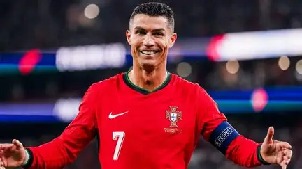

Cristiano Ronaldo dos Santos Aveiro 1985. február 5-én született Portugáliában, Madeira szigetén, Funchal városában. Egy egyszerű, szerény körülmények között élő családban nőtt fel. Édesanyja, Maria Dolores szakácsként és takarítóként dolgozott, édesapja, José Dinis pedig kertészként dolgozott, emellett egy helyi futballklubnál is segített. Ronaldónak három testvére van, ő a család legfiatalabb gyermeke. Már kisgyermekkorában nagyon szerette a futballt. Gyakran játszott a környéken és az iskolában is. Saját elmondása szerint már fiatalon arról álmodott, hogy egyszer profi futballista lesz. 11 éves korában elhagyta Madeirát, és Lisszabonba költözött, hogy egy futballakadémián folytassa az életét. Ez nagy változás volt számára, hiszen nagyon fiatalon került távol a családjától. Ronaldo gyermekkora nem volt mindig könnyű. A családnak anyagi nehézségei is voltak, és édesapja alkoholproblémákkal küzdött. Édesapja 2005-ben, amikor Ronaldo 20 éves volt, meghalt. Ez nagyon nehéz időszak volt számára. Ennek ellenére Ronaldo továbbra is szoros kapcsolatban maradt édesanyjával és testvéreivel. Cristiano Ronaldo magánéletében fontos szerepet tölt be a családja. Több gyermeke van, és édesanyja is gyakran jelen van az életében. A futball mellett a család és a jótékonykodás is fontos része az életének. Ronaldo története egy Madeirán felnövő, futballért rajongó kisfiú történetével kezdődött. Már nagyon fiatalon komolyan vette az álmait, és 11 éves korában olyan döntést hozott, amely teljesen megváltoztatta az életét.
Cristiano Ronaldo futballkarrierje a portugál Sporting CP csapatánál kezdődött. Már fiatalon nagy tehetségnek számított, ezért hamar felfigyeltek rá nagyobb klubok is. 2003-ban, mindössze 18 évesen az angol Manchester United játékosa lett. Az angol csapatnál gyorsan fejlődött, és néhány év alatt a világ egyik legismertebb futballistájává vált. A Manchester Unitedben több fontos trófeát is nyert. 2008-ban megkapta első Aranylabdáját, amelyet a világ legjobb futballistájának ítélnek oda. Ugyanebben az évben a Manchester Uniteddel megnyerte a Bajnokok Ligáját is. 2009-ben Ronaldo a spanyol Real Madridhoz igazolt. Ez lett pályafutásának egyik legsikeresebb időszaka. A Real Madrid színeiben rengeteg gólt szerzett, és több Bajnokok Ligáját, spanyol bajnoki címet és kupát is nyert. A klub történetének egyik legeredményesebb gólszerzője lett. A Real Madridban töltött évei alatt további Aranylabdákat is nyert. 2018-ban Olaszországba igazolt, és a Juventus játékosa lett. Ott is sikeres időszakot töltött, többek között olasz bajnoki címet is nyert. 2021-ben visszatért a Manchester Unitedhez, ahol ismét pályára lépett a klub színeiben. Később Szaúd-Arábiába igazolt, és az Al-Nassr csapatában folytatta pályafutását. A portugál válogatottban is hosszú éveken keresztül játszott. 2016-ban Portugáliával megnyerte az Európa-bajnokságot, ami a válogatott történetének egyik legfontosabb sikere volt. Cristiano Ronaldo pályafutása során számos rekordot ért el, és több jelentős egyéni és csapattrófeát nyert. Gyorsasága, gólerőssége, technikája és kemény munkája miatt a futball egyik legismertebb játékosává vált.
Vissza a tetejére